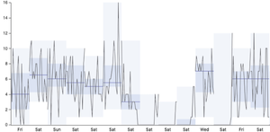

We introduce the design and implementation of TimeElide, a visual analysis tool for the novel data abstraction of non-contiguous time series slices, namely time intervals that contain a sequence of time-value pairs but are not adjacent to each other. This abstraction is relevant for analysis tasks where time periods of interest are known in advance or inferred from the data, rather than discovered through open-ended visual exploration. We present a visual encoding design space as an underpinning of TimeElide, and the new sparkbox technique for visualizing fine and coarse grained temporal structures within one view. Datasets from different domains and with varying characteristics guided the development and their analysis provides preliminary evidence of TimeElide's utility.
Paper

TimeElide: Visual Analysis of Non-Contiguous Time Series Slices.
Fig. 1. TimeElide. (a) Select data source and slicing method, (b) select visualization type, (c) sparkbox visualization to show the
number of per-player events during 22 soccer matches, (d) tooltip for the currently active slice, and (e) global timeline. Alternative
visual encodings: (f) 2D heatmap with absolute within-slice timing, and (g) 2D heatmap with normalized within-slice timing.
(h) Illustration of extracting non-contiguous time series slices according to given periods of interest (manual slicing).